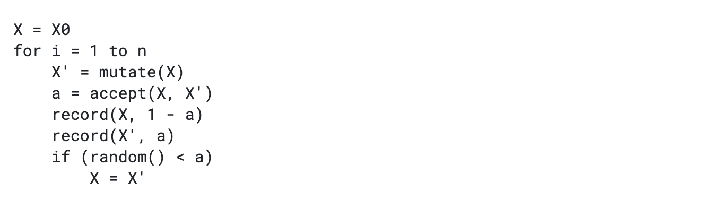
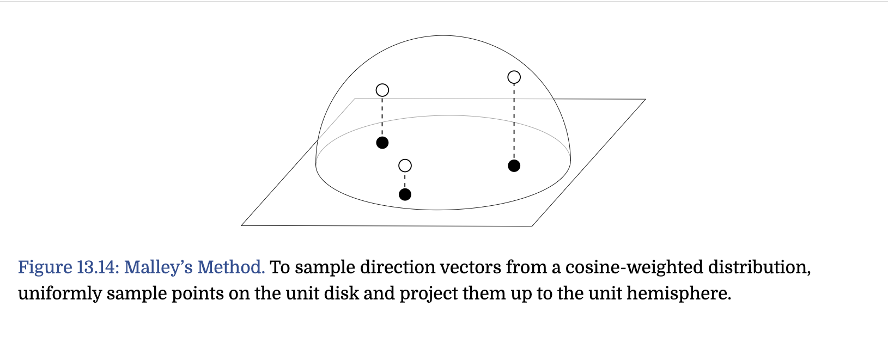
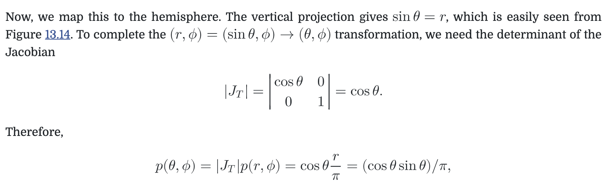

Monte Carlo Integration
- why Monte Carlo Integration
- Background and Probability Review
- The Monte Carlo Estimator
- Sampling Random Variable
- Metropolis Sampling
- Transforming between Distributions
- 2D Sampling with Multidimensional Transformations
- 如何提高积分器的效率
这篇笔记整体的逻辑是：
- 我想估计一个积分值，有哪些方法, 为什么Monte Carlo Integration可以脱颖而出
- Monte Carlo Integration是个啥原理 --- Monte Carlo estimator
- 给定了一个Monte Carlo estimator，我应该如何得到samples
- 如何评估一个Monte Carlo estimator的好坏
- 怎样让自己的Monte Carlo estimator更好
why Monte Carlo Integration
相比于rapezoidal integration or Gaussian quadrature, Monte Carlo integration makes it possible to estimate the reflected radiance simply by choosing a set of directions over the sphere, computing the incident radiance along them, multiplying by the BSDF’s value for those directions, and applying a weighting term.
The main disadvantage of Monte Carlo is that if n samples are used to estimate the integral, the algorithm converges to the correct result at a rate of O(n^(1/2)).
Most of the current research in Monte Carlo for computer graphics is about reducing this error as much as possible while minimizing the number of additional samples that must be taken.
Background and Probability Review
canonical uniform random variable
均匀随机采样重要的原因是：
- it is easy to generate a variable with this distribution in software
- it is possible to generate samples from arbitrary distributions by first starting with canonical uniform random variables and applying an appropriate transformation
variance
Variance is a fundamental concept for quantifying the error in a value estimated by a Monte Carlo algorithm. It provides a precise way to quantify this error and measure how improvements to Monte Carlo algorithms reduce the error in the final result.
{kind=link}
The Monte Carlo Estimator
- estimator --- approximates the value of an arbitrary integral
- unbias independent of the sample nums N and the dimensionality of the integral
- rate of convergence O(n^(1/2))
{kind=link}
{kind=link}
Sampling Random Variable
The Inversion Method
等于是计算出cdf, 然后以一个均匀随机采样去获得[0,1]的随机数 y，然后反算出cdf(x) = y的x值是多少作为采样值。
{kind=link}
{kind=link}
The Rejection Method
{kind=link}
{kind=link}
Metropolis Sampling
a technique for generating a set of samples from a non-negative function that is distributed proportionally to f ’s value (Metropolis et al. 1953).
main ideas
- start-up X_0
- make mutation from X_i-1 to X_i --- transition function T
- weather new X_i is accepted --- acceptance probability a
- final target --- equilibrium

- pseudocode

example
上面的理论听起来还是太抽象，用实际的例子来理解是最好不过的。 为了拟合以下概率密度函数，采用两种mutation的方式
{kind=link}
{kind=link}
{kind=link}
{kind=link}
{kind=link}
{kind=link}
{kind=link}
{kind=link}
estimate integrals
其实这里没太懂。。。这里的近似有点像之前games202里说的chebyshelve不等式近似。
{kind=link}
disadvantages
successive samples in the sequence are statistically correlated, and it may needs more samples so can well distributed across the domain.
Transforming between Distributions
我们通常是用一种简单好采样的distribution(eg. uniform random)去转换到目标的distribution上，那这个转换函数怎么得到？
{kind=link}
{kind=link}
{kind=link}
2D Sampling with Multidimensional Transformations
基本的思想是 先根据p(x)得到x的一个sample，再根据p(y|x)分布得到y的一个sample.
{kind=link}
- 以均匀球面采样为例 求得cdf，求逆，得到均匀采样如何转换到均匀球面采样
- Malley’s method --- 正好带到之前看SSR的GGX visible normal中的采样方法 就是把单位球的cos(theta)分布采样转换成单位圆的采样   而单位球上的均匀采样正好也满足同样的概率分布
{kind=link}
{kind=link}
{kind=link}
{kind=link}
{kind=link}
如何提高积分器的效率
https://zhuanlan.zhihu.com/p/82984446
- 通过构造一个近似原被积函数的新函数的解析积分方法。
- 通过在积分域中合理分布采样点。
- 通过在采样过程中获得的信息适应性控制采样密度。
- 通过结合来自不同估计的结果。
efficiency of an estimator
{kind=link}
- variance
- time
Russian Roulette and Splitting
Russian Roulette
目标是无偏地 skip tracing unimportant rays. 通常c=0 但是问题是Russian Roulette会增大方差。
{kind=link}
splitting
increases the number of samples taken in order to improve efficiency
{kind=link}
Careful Sample Placement
讨论了减少方差的一些方法
Stratified Sampling
基本原理就是把积分区域分成n nonoverlapping regions, 在每个region里再进行采样。
Quasi Monte Carlo
they replace the pseudo-random numbers used in standard Monte Carlo with low-discrepancy point sets generated by carefully designed deterministic algorithms.
引入bias
改成有偏估计但是方差更小
Importance Sampling
采样的概率密度分布尽可能的接近原函数。 eg. if directions are sampled from distributions that match other factors of the integrand (the BSDF, the incoming illumination distribution, etc.), efficiency is similarly improved. 一个粗糙的证明：
{kind=link}
{kind=link}
Multiple Importance Sampling
多个函数相乘的积分估计是更加困难的，因为不是简单的分别采样就可以得到一个好的结果，有的时候错误的分布采样得到的结果甚至比随机均匀采样还要糟糕。
{kind=link}
{kind=link}